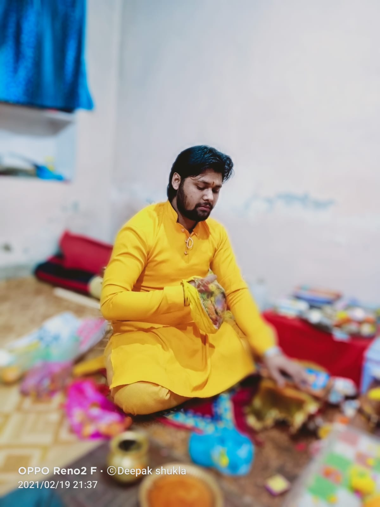

Hyderabad mein uplabdh
हर शुभ कार्य,
विधि-विधान से।
Pt. Acharya Deepak Shukla ji dwara sabhi prakar ki puja, shuddh mantrochchar aur poori samagri vyavastha ke saath.
.jpeg)
Namaste, aapke parivar ki puja mein hum saath hain
Pt. Acharya Deepak Shukla ne Varanasi ke Sampurnanand Sanskrit Vishwavidyalaya se Shastri ki shiksha prapt ki hai. Puja uttar bharatiya paddhati se hoti hai, mantra shuddh bole jaate hain aur har vidhi ka arth saral Hindi mein samjhaya jata hai.
Ghar ki puja ho ya mandir ki seva, Pandit ji dono mein sakriya hain. Isi liye aapko vidhi bhi milti hai aur shraddha bhi.
Pramukh sevayein
Sabhi puja ki jaati hain. Zyada jaankari ke liye puja par click karein.
Shastri, Prathama Shreni
- Vishay: Navya Vyakarana
- Hindi aur Angrezi ka adhyayan
- Pauroohitya (karmakand) mein shiksha ke saath vyavaharik puja ka anubhav
Puja ki jhalak
Ghar ke havan se lekar mandir ki seva tak.



Hyderabad mein kahin bhi
Aapke ghar, flat, mandir ya hall par aakar puja karayi jaati hai.
- Gachibowli
- Kondapur
- Madhapur
- Hitech City
- Kukatpally
- Miyapur
- Secunderabad
- Aur Hyderabad ke anya ilaake